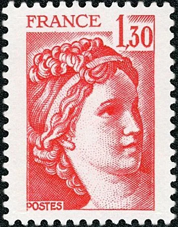
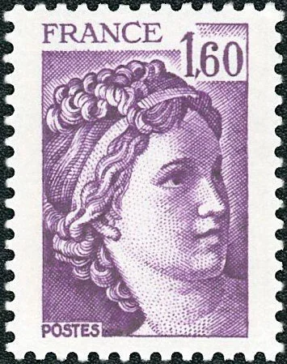
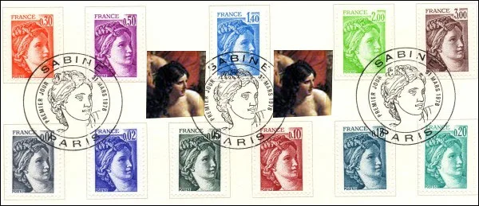
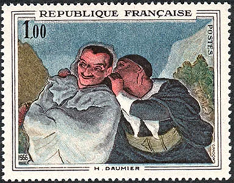
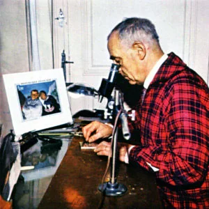
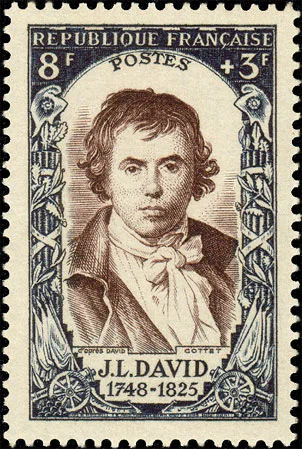
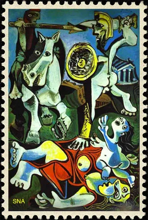

The Intervention of the Sabine Women, by David - on Stamps
The Rape of the Sabine Women is an episode in the legendary history of Rome in which the first generation of Roman men acquired wives for themselves from the neighboring Sabine families. (In this context, rape means abduction—raptio—rather than its prevalent modern meaning of sexual violation.) The Rape is supposed to have occurred in the early history of Rome, shortly after its foundation by Romulus and his mostly male followers. Seeking wives in order to found families, the Romans negotiated unsuccessfully with the Sabines, who populated the area. Fearing the emergence of a rival society, the Sabines refused to allow their women to marry the Romans; consequently, the Romans planned to abduct Sabine women. Romulus devised a festival of Neptune Equester and proclaimed the festival amongst Rome's neighbours. According to Livy, many people from Rome's neighbours attended, including from the Caeninenses, Crustumini, and Antemnates, and many of the Sabines. At the festival Romulus gave a signal, at which the Romans grabbed the Sabine women and fought off the Sabine men. The indignant abductees were implored by Romulus to accept Roman husbands. Romulus offered them free choice and promised civic and property rights to women. According to Livy he spoke to them each in person, "and pointed out to them that it was all owing to the pride of their parents in denying the right of intermarriage to their neighbours. They would live in honourable wedlock, and share all their property and civil rights, and — dearest of all to human nature — would be the mothers of free men. Jacques-Louis David painted the other end of the story, when the women intervene to reconcile the warring parties. The Sabine Women Enforcing Peace by Running Between the Combatants (also known as The Intervention of the Sabine Women ) was completed in 1799. It is in the Louvre Museum.

David had worked on it from 1796, when France was at war with other European nations after a period of civil conflict culminating in the Reign of Terror and the Thermidorian Reaction, during which David himself had been imprisoned as a supporter of Robespierre. After David’s estranged wife visited him in jail, he conceived the idea of telling the story, to honor his wife, with the theme being love prevailing over conflict. The painting was also seen as a plea for the people to reunite after the bloodshed of the revolution.


The painting depicts Romulus's wife Hersilia — the daughter of Titus Tatius, leader of the Sabines — rushing between her husband and her father and placing her babies between them. A vigorous Romulus prepares to strike a half-retreating Tatius with his spear, but hesitates. Other soldiers are already sheathing their swords.The rocky outcrop in the background is the Tarpeian Rock. Source . La Sabine de Gandon est un timbre-poste d'usage courant qui a servi en France de décembre 1977 au retrait de la vente des derniers timbres en décembre 1982. Ce type remplace la Marianne de Béquet et est remplacé en janvier 1982 par la Liberté de Gandon d'après Delacroix. La Sabine est dessinée et gravée par Pierre Gandon à partir de la tête de l'héroïne Hersilie, représentée au centre du tableau de Jacques Louis David Les Sabines, sur lequel elle s'interpose entre les Sabins et les Romains. Source

Pierre Gandon was a French illustrator and engraver of postage stamps. He was born January 20, 1899 in L'Haÿ-les-Roses (Val-de-Marne) and died July 23, 1990. Pierre Gandon studied in Paris at the École Estienne, then at the École des Beaux-Arts. He won his first of many prizes in 1921: the Prix de Rome. Gandon answered an advertisement in a paper and finally obtained the right to design "Femme indigène", his first postage stamp series issued 1941 in the French colony of Dahomey.

The same year was issued his first stamp for France: the coat of arms of Reims. Four times he received the Grand Prix de l'Art philatélique during his career that includes three French definitive stamps series: - Marianne de Gandon series issued at the end of the Second World War - Sabine de Gandon series inspired by Jacques-Louis David's The Intervention of the Sabine Women, issued during the 1970s - La liberté de Gandon series, inspired by Eugène Delacroix's Liberty Leading the People.


Source . Eventually compare the vision of the proclaimed painter of peace and freedom, Pablo Picasso, as it appears on his version of the "Rape of the Sabine Women",

with David's work, that was Picasso's source of inspiration. While Jacques Louis David, who lived during very dangerous times, in which he was personally involved, depicts love prevailing over conflict , Picasso proposes just hate, violence and desperation instead . Blame Picasso himself, and not the dangerous times that some critics claim that they influenced him, for his attempt to spoil our delight, derived from David's classical work of art and from Gandon's beautiful, and in all respects definitive stamps. Links to pages found on this site: French Paintings on Stamps La liberté de Gandon